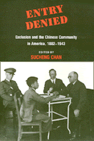

<body bgcolor="#FFFFFF" text="#000000" link="#0000FF" vlink="#CC0000" alink="#CC0000"><center><hr width="350" size="1" align="center" noshade>Legal history illuminating Chinese Americans' struggle for civil rights<hr width="350" size="1" align="center" noshade><p><a href="https://cdcshoppingcart.uchicago.edu/Cart/ChicagoBook.aspx?ISBN=9780877227984&&PRESS=temple" target="_top">Buy this book!</a> | <a href="https://cdcshoppingcart.uchicago.edu/Cart/Cart.aspx?PRESS=temple" target="_top">View Cart</a> | <a href="https://cdcshoppingcart.uchicago.edu/Cart/Cart.aspx?PRESS=temple" target="_top">Check Out</a></p><p></p></center><!--none//--><h1>Entry Denied</h1>
<H2>Exclusion and the Chinese Community in America, 1882-1943</H2>
<h3>Sucheng Chan</h3>
<P>cloth 0-87722-798-5 $49.95, Mar 91, <FONT COLOR=#990033>Out of Stock Unavailable</FONT>
<br>paper 1-56639-201-2 $24.95, Jan 94, <FONT COLOR=#990033>Out of Stock Unavailable</FONT>
<BR> 320 pp
</P><BLOCKQUOTE><I>"</I>Entry Denied<I> is essential reading; it greatly enriches our understanding of the life experiences and strategies of those Chinese immigrants who struggled to establish a place and community in an openly hostile and racist society."</I>
<br>&#151<b><I>China Review International</I></b><I></I></BLOCKQUOTE>
<p>In 1882, Congress passed a Chinese exclusion law that barred the entry of Chinese laborers for ten years. The Chinese thus became the first people to be restricted from immigrating into the United States on the basis of race. Exclusion was renewed in 1892 and 1902 and finally made permanent in 1904. Only in 1943 did Congress rescind all the Chinese exclusion laws as a gesture of goodwill towards China, an ally of the United States during World War II. <I>Entry Denied</I> is a collection of essays on how the Chinese exclusion laws were implemented and how the Chinese as individuals and as a community in the U.S. mobilized to mitigate the restrictions imposed upon them. It is the first book in English to rely on Chinese language sources to explore the exclusion era in Chinese American history.
<BR>&nbsp;<h2>Reviews</h2>
<p><I>"Sucheng Chan has edited a book which...should prove to be an excellent resource for scholars and laypersons alike. Especially interesting and useful is the legal history and analyses of decisions of the lower Federal Courts and the United States Supreme Court, which provide fresh information on the struggle of the Chinese against exclusion laws."</I>
<br>&#151<b><I>The Journal of Asian Studies</I></b>
<p><I>"This volume is a contribution to the field of Chinese American history and reflects the 'new' scholarship in Asian American Studies.... [E]ach essay, in its own emphasis, reveals how Chinese immigrants were active participants in the making of American history, challenging a repressive system on many fronts.... This volume helps to illuminate Chinese America's place in the struggle for civil rights in the U.S."</I>
<br>&#151<b><I>The Western Historical Quarterly</I></b>
<BR>&nbsp;<h2>Contents</h2><P>
<p>Preface &#150 Sucheng Chan
<br>Acknowledgments
<br>1. The Chinese Contribution to the Development of American Law &#150 Charles J. McClain and Laurene Wu McClain
<br>2. Due Process, Treaty Rights, and the Efforts to Exclude the Chinese, 1882- 1891 &#150 Christian G. Fritz
<br>3. "Laws Harsh as Tigers": Enforcement of the Chinese Exclusion Laws, 1891-1924 &#150 Lucy E. Salyer
<br>4. The Exclusion of Chinese Women, 1870-1943 &#150 Sucheng Chan
<br>5. Chinatown Social Organizations and the Anti-Chinese Movement, 1882-1914 &#150 L. Eve Armentrout Ma
<br>6. The Kuomintang in Chinese American Communities before World War II &#150 Him Mark Lai
<br>7. Chinese Protestants in the San Francisco Bay Area &#150 Wesley Woo
<br>8. The Politics and Poetics of Folksong Reading: Portrayal of Life Under Exclusion &#150 Sau-ling C. Wong
<br>English-Chinese Glossary
<br>About the Contributors
</P><BR>&nbsp;<H2>About the Author(s)</H2>
<P><b>Sucheng Chan</b>, Professor and Chair of Asian American Studies at the University of California, Santa Barbara, is general editor of Temple's <I><A HREF="../asam_history.html" TARGET="_top">Asian American History and Culture Series</a></I>.</P>
<BR><H2>Subject Categories</H2>
<p><A HREF="/tempress/asian_amer.html" TARGET="_top">Asian American Studies</a>
<BR><A HREF="/tempress/american.html" TARGET="_top">American Studies</a>
</p>
<BR><h2 class="inpageheading">In the series</H2>
<P><I><a href="http://www.temple.edu/tempress/asam_history.html" onMouseOver="window.status='Click for other books in this series!'; return true;" onMouseOut="window.status=''; return true;" target="_top">Asian American History and Culture</a></i>, edited by K. Scott Wong, Linda Trinh V�, and Cathy Schlund-Vials.
</p><p>Founded by Sucheng Chan in 1991, the <I>Asian American History and Culture</I>, series has sponsored innovative scholarship that has redefined, expanded, and advanced the field of Asian American studies while strengthening its links to related areas of scholarly inquiry and engaged critique. Like the field from which it emerged, the series remains rooted in the social sciences and humanities, encompassing multiple regions, formations, communities, and identities. Extending the vision of founding editor Sucheng Chan and emeriti editor Michael Omi and David Palumbo-Liu, series editors K. Scott Wong, Linda Trinh V�, and Cathy Schlund-Vials continue to develop a foundational collection that embodies a range of theoretical and methodological approaches to Asian American studies.</p>
<p align="center"><a href="https://cdcshoppingcart.uchicago.edu/Cart/ChicagoBook.aspx?ISBN=9780877227984&&PRESS=temple" target="_top">Buy this book!</a> | <a href="https://cdcshoppingcart.uchicago.edu/Cart/Cart.aspx?PRESS=temple" target="_top">View Cart</a> | <a href="https://cdcshoppingcart.uchicago.edu/Cart/Cart.aspx?PRESS=temple" target="_top">Check Out</a></p><p><font face="Arial" size="1"><a href="copyright.html" onMouseOver="window.status='Web Copyright Policy';return true;" onMouseOut="window.status=''" title="Web Copyright Policy">&copy;</a> 2015 <a href="http://www.temple.edu" target="new" onMouseOver="window.status='Link to Temple University home page';return true;" onMouseOut="window.status=''" title="Link to Temple University home page">Temple University</a>. All Rights Reserved. http://www.temple.edu/tempress/titles/811_reg.html</font></p>